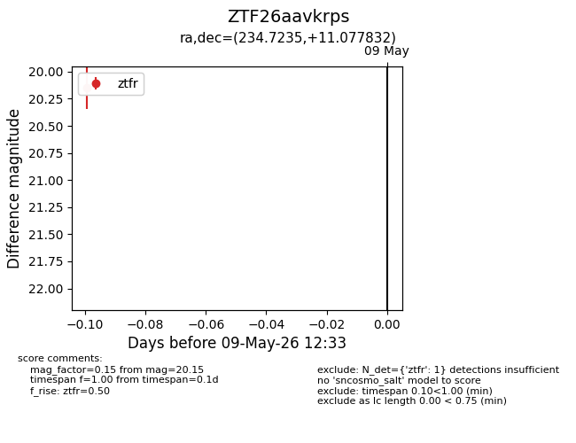
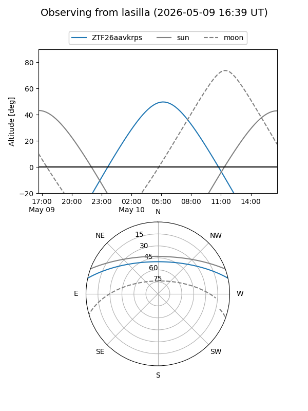
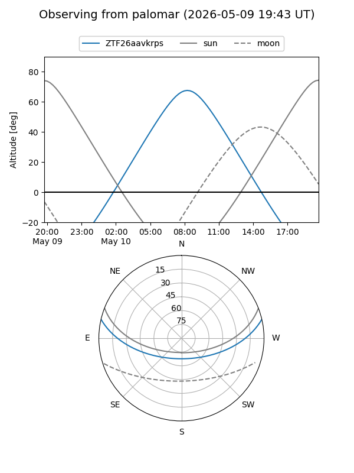

ZTF26aavkrps
Target ZTF26aavkrps at 2026-05-09 12:34
Aliases and brokers:
FINK: link
Lasair: link
ALeRCE: link
alt names
ZTF26aavkrps (ztf,fink_ztf)
Coordinates:
equatorial (ra, dec) = 234.7235,+11.07783
equatorial (HMS+DMS) = 15:38:53.64,+11:04:40.20
galactic (l, b) = (19.0175,+47.56687)
Flags:
Photometry:
last ztfr=20.15
1 ztfr detections
Lightcurve

Visibility


Additional plots